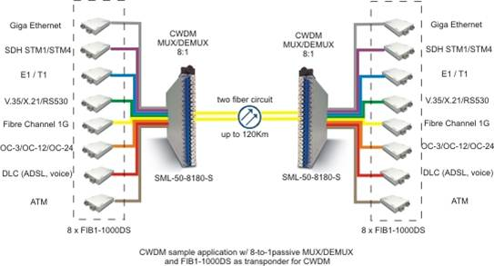
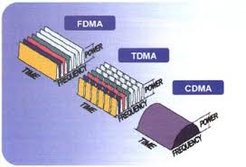

Introducción
CDM permite que múltiples usuarios compartan el mismo canal usando códigos únicos. Stallings lo relaciona con sistemas móviles.
Desarrollo
Cada señal se distingue mediante un código. Proakis explica que ofrece alta resistencia a interferencias. Aquí va el desarrollo del tema.


Conclusión
En conclusión, CDM es clave en comunicaciones inalámbricas modernas.